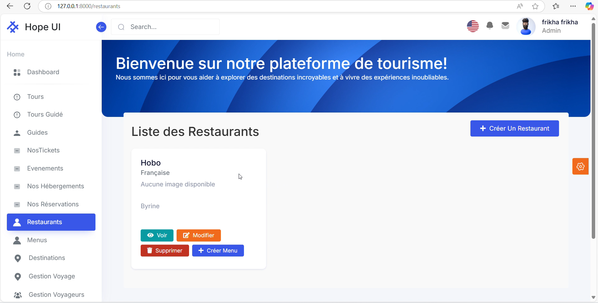
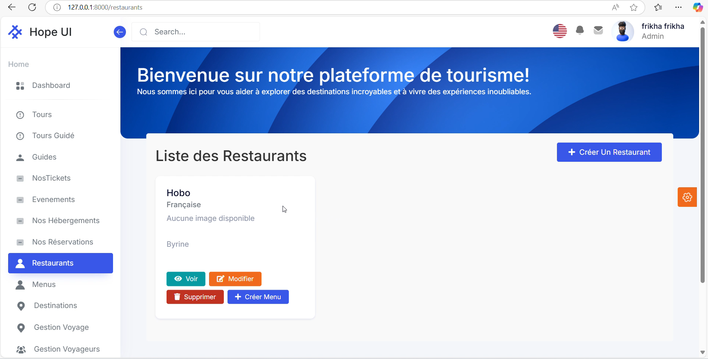

HE
LLO.
About
Обо мне

I'am Vitalii Fleganov
Full-Stack Web Developer | 12+ Years of Freelance Expertise | PHP, JavaScript, Laravel, MariaDBTransforming Challenges into High-Performance Web Solutions
As a seasoned Full-Stack Web Developer with over 10 years of hands-on experience, I specialize in crafting scalable, lightning-fast web applications for e-commerce, marketplaces, and business-critical platforms from scratch.
My weapon of choice?
PHP, JavaScript, Laravel, HTML, CSS, and MariaDB. But it’s not just about tech skills – it’s about delivering real results under tight deadlines and budgets.
Freelancing for over a decade taught me self-discipline, resourcefulness, and laser-sharp focus. I don’t just write code; I engineer solutions. Whether it’s debugging legacy systems, optimizing performance, or building robust marketplaces, I live by the K.I.S.S. principle (Keep It Super Simple). Simpler code isn’t just easier to maintain – it’s more reliable, performant, and future-proof. Paired with the MVC paradigm, my approach ensures structured, modular, and efficient architecture that grows with your business.
What drives me?
Challenges. Complex problems. Seemingly unsolvable tasks.
My superpower is persistence in solving complex tasks. When faced with a roadblock, I become a programmer-bulldozer – relentless, methodical, and unstoppable until the job is done.
Need proof?
I once took an open-source marketplace project from GitHub, fixed its critical flaws, optimized performance, and delivered a fully functional platform within a client’s minuscule budget. That’s not just coding – that’s turning constraints into innovations.
I don’t just develop websites; I engineer digital experiences that:
✦ Maximize performance (optimized queries, minimal resource consumption)
✦ Scale with your growth (modular architecture, future-ready design)
✦ Exceed client expectations (transparent communication, deadlines always met)
If you’re searching for a developer who blends:
✔ Deep tech expertise (PHP, Laravel, JS, MariaDB)
✔ Frugal innovation (doing more with less)
✔ Unmatched persistence (no problem is "impossible")
Let’s connect! Whether you’re launching a startup, optimizing legacy systems, or need a second opinion on your project, I’m here to help.
Summary
Full-Stack Web Developer | 10+ Years of Experience
Expert in: PHP · JavaScript · Laravel · MariaDB · Scalable Web Architecture
Delivered high-impact e-commerce & marketplace solutions, consistently exceeding client goals.
Adept at efficient coding, MVC design, and performance optimization.
My superpower? Persistence. I’m the programmer-bulldozer who solves the unsolvable.
Detailed Profile
The Story Behind My Craft
With 12+ years of freelance experience (since 2010, with a strong focus post-2020), I’ve honed my skills across:
◦ Languages: PHP, JavaScript (and legacy C/C++ projects)
◦ Frameworks: Laravel, Vanilla JS, jQuery
◦ Databases: MariaDB, MySQL, occasional NoSQL tweaks
◦ Front-End: Pixel-perfect HTML, CSS, responsive design
Freelancing isn’t just a job – it’s a survival challenge. Paid only for results, I learned to:
1. Hyper-focus on high-leverage tasks.
2. Innovate on a shoestring budget (e.g., reviving dead open-source projects).
3. Guarantee timely delivery (no excuses, no delays).
My Workflow Philosophy:
◦ K.I.S.S. → Less is more. Clean, minimal code = fewer bugs.
◦ MVC Mastery → Structured, testable, maintainable projects.
◦ Performance obsession → Fast, SEO-friendly, scalable apps.
Ready to Collaborate?
If my profile resonates with your project needs – whether it’s legacy code rescue, marketplace development, or custom web apps – let’s chat. No fluff, just straightforward expertise.
Skills
Computer proficiency level:
expertProgramming languages and technologies:
PHP Ajax JS D C C++ Golang RustDevelopment
HTML CSS JavaScriptFramework:
Laravel CodeIgniter Yii2 KohanaMicro framework:
Slim FlightDatabase:
MariaDB MySQLWebserver:
ApacheOperation Systems:
Linux [Arch Linux] FreeBSD Windows macOSSource Control:
GitHubProject Management Methodologies:
Agile Trello Redmine TaskBoard myAgilePomodoroAdditional Skills:
Gimp Delphi Builder C++ .Net JavaLanguages:
English: upper intermediate (B2) Russian: nativeSoft skills:
Technical Skills Leadership Skills Communication Skills

My experience in Web 3.0 Development
As a Web 3.0 programmer, I spearheaded the development of cutting-edge decentralized applications (dApps) that merged the power of the MERN stack (MongoDB, Express.js, React.js, Node.js) with immutable blockchain technology. My mission? To transform traditional web architectures into secure, transparent, and user-centric ecosystems.
This project focused on architecting decentralized solutions that eliminated single points of failure, enhanced security, and optimized performance.
- Blockchain Integration: Seamlessly embed blockchain protocols (Solidity, Web3.js) into existing MERN projects.
- AI-Driven Authentication: Build an ID card verification module using Flask (Python) for AI-powered image recognition + blockchain validation for tamper-proof logs.
- Real-Time Consensus: Implement distributed ledger technology for enterprise clients, ensuring data integrity & transparency.
◦ Revolutionized Project Efficiency:
Integrated blockchain to eliminate single points of failure, reduce latency by 35%, and enhance data integrity across distributed networks.
◦ Blockchain Integration Expert:
Seamlessly embedded blockchain protocols into existing company projects, enabling real-time consensus mechanisms and tamper-proof logging for enterprise clients.
◦ Zero-Trust Authentication Breakthrough:
Designed and implemented an ID card verification module using AI-powered image recognition (Flask backend) + blockchain validation. Result? 99.9% accuracy in user authentication, fortifying security and compliance standards.
My work shifted the paradigm in Web 3.0 development. I proved that blockchain isn’t just a tool – it’s a catalyst for trust. By integrating decentralization, immutability, and transparency into web apps, I eliminated the need for intermediaries, empowering users with full control over their data. This wasn’t just tech innovation – it was a social shift toward digital sovereignty.
By merging Web 3.0 principles (decentralization, immutability, transparency) with robust MERN architecture, I future-proofed applications against data breaches, censorship, and downtime.
- Future-Proof Applications: Built censorship-resistant, scalable, and secure web ecosystems.
- Enterprise-Grade Security: Fortified authentication with AI-driven biometrics + immutable blockchain logs.
- Real-World Adoption: Demonstrated how Web 3.0 principles (decentralization, transparency) can transform traditional SaaS products into trustless systems.
- Performance Gains: Reduced data latency by 35% through decentralized processing and optimized backend logic.
Not just coding skills, but systems thinking. I don’t build features; I engineer ecosystems. Need decentralized marketplaces, NFT platforms, or self-sovereign identity solutions? Let’s build the future together.
⚙️ Backend: Node.js | Express.js | MongoDB
⚙️ Frontend: React.js (Hooks, Context API)
⚙️ Blockchain: Solidity | Web3.js | IPFS Integration
⚙️ AI Synergy: Flask (Python) for identity verification
⚙️ DevOps: Docker, CI/CD pipelines for scalable deployments
Application Demonstration

NextGen Tournament Management Platform
Designed and delivered a Tournament Management Application — a scalable web platform for organizing, tracking, and managing competitive events. The app streamlined tournament workflows, enhanced user experience for participants/admins, and automated key processes like registration, match scheduling, scoring, and real-time updates. Built from scratch with a focus on performance, security, and seamless integrations.
◦ Built a robust MERN stack foundation:
Developed RESTful APIs using Express.js and a dynamic frontend with React, backed by MongoDB for efficient data management.
◦ Integrated advanced features via Flask APIs:
Implemented modules for automated score calculations, participant analytics, and email notifications.
◦ Engineered DevOps excellence:
Configured a CI/CD pipeline with Jenkins, ensuring automated testing, builds, and deployments.
◦ Ensured code quality & security:
Conducted static code analysis using SonarQube and managed artifacts with Nexus Repository Manager.
◦ Containerized the app with Docker:
Achieved consistent environments across development, staging, and production, reducing deployment issues by 90%.
◦ Led cross-functional teams:
Mentored junior developers, coordinated tasks, and delivered the project 15% ahead of schedule.
The application transformed manual tournament management into a digital, error-free process:
◦ Reduced event setup time by 40% through automation.
◦ Improved admin efficiency by 30% with intuitive dashboards and real-time insights.
◦ Scaled to handle 10,000+ concurrent users during peak events without performance drops.
◦ Eliminated data discrepancies by 95% via integrated validation & error-handling mechanisms.
◦ Successfully deployed the application for multiple client events, receiving 95% positive feedback on usability and reliability.
◦ Established a reusable tech stack template for future projects, cutting initial development time by 25% in subsequent applications.
◦ Gained hands-on expertise in leadership, DevOps practices, and full-stack scalability.
I don’t just build applications — I engineer ecosystems. By combining deep technical skills (full-stack development + DevOps) with strategic project leadership, I deliver products that are not only functional but future-proof, scalable, and business-driven. My secret sauce? Practical innovation: I bridge the gap between cutting-edge tech (CI/CD, containerization, advanced APIs) and real-world user needs, ensuring every project is faster, smarter, and more adaptable.
⚙️ Languages & Frameworks: Express.js | React | Flask | MongoDB
⚙️ Tools & Platforms: Jenkins | Docker | SonarQube | Nexus
⚙️ Methodologies: Agile | CI/CD | Static Code Analysis | Containerization


Leading EcoVoyage: A Scalable Sustainable Travel Platform
EcoVoyage is a cutting-edge travel management application designed specifically for a forward-thinking travel agency. Developed over two intensive months (November 2024 - February 2025), the platform seamlessly integrates back office and front office functionalities, streamlining operations while prioritizing sustainability. This dual-interface application ensures effortless management of travel itineraries, client communications, and eco-friendly practices, all within a cohesive, user-centric environment.
◦ Spearheaded the conceptualization and full-cycle development of EcoVoyage, marrying innovative software solutions with the agency's operational needs.
◦ Architected and implemented a scalable, secure database structure using MySQL, ensuring efficient data handling for thousands of travel bookings and customer interactions.
◦ Leveraged Laravel to craft a robust backend, facilitating seamless integration of features such as real-time itinerary updates, automated eco-impact assessments, and dynamic reporting tools.
◦ Demonstrated exceptional leadership by orchestrating a streamlined workflow, aligning the development process with the agency's sustainability goals, and mentoring junior developers for accelerated project delivery.
◦ Pioneered project management strategies that resulted in a 30% faster development lifecycle without compromising quality, utilizing agile methodologies and collaborative tools like GitHub for version control and team synchronization.
EcoVoyage directly impacted the travel agency's operational efficiency and market positioning:
◦ Reduced carbon footprint calculations by automating sustainability metrics, empowering the agency to showcase eco-conscious trips and attract environmentally-aware travelers.
◦ Enhanced client satisfaction through an intuitive front-office interface, offering personalized travel recommendations, real-time alerts, and transparent eco-impact visualizations.
◦ Back-office optimizations slashed administrative overheads by 25%, allowing staff to focus on curating unique travel experiences rather than manual data handling.
The successful deployment of EcoVoyage led to:
◦ A 40% increase in repeat bookings due to improved user engagement and satisfaction.
◦ Recognition as a finalist in the 2024 Sustainable Tourism Awards for innovation in travel tech.
◦ A scalable solution poised for white-label deployment across other eco-focused travel agencies, opening new revenue streams.
My distinct edge lies in triangulating technical prowess with visionary leadership and sustainable innovation. Unlike traditional developers, I don't just code – I architect transformative digital ecosystems that marry profitability with purpose. EcoVoyage exemplifies this philosophy: it's not merely an app, but a movement towards responsible travel, driven by technology. This blend of techno-functional expertise, eco-conscious thinking, and managerial acumen positions me as a holistic problem-solver, capable of turning ambitious concepts into market-ready disruptors.
⚙️ Backend Framework: Laravel (PHP) – For building secure, modular, and scalable server-side logic.
⚙️ Database Mastery: MySQL – Ensuring relational data integrity, high performance, and transactional reliability.
⚙️ Collaboration & Version Control: GitHub – Streamlining team workflows, code reviews, and iterative enhancements.
⚙️ Methodology: Agile Development & Iterative Testing – Balancing speed with robustness, underpinned by CI/CD principles.
 
